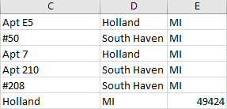

Originally, I thought about using the geopy Python library for geocoding. It makes the process of geocoding through your preferred API quite simple. For example, you can use the Open Street Map API: Nominatum. Though it is open source and free, I found it to lack the accuracy I wanted.
However, after cross-checking some results, I found their accuracy to be inadequate. For now, since I want to map the results on CARTO, I have written off using Google's API because using their data would force me to use a Google basemap. Moreover, Google will only geocode 2,500 addresses per day, which would slow down the processing of over 10,000 addresses.
While there are other geocoding APIs out there, some free and some not, I decided to turn to an organization that specializes in data gathering for residences: the U.S. Census Bureau. First format CSV for geocoding via pandas:
# format CSV for census geocoder
df = pd.read_csv('geocodeOutput.csv', sep=',')
df.drop(['ID','Organization','First Name','Last Name','Phone','Email'],
axis=1, inplace=True)
df.to_csv('geocodeOutput.csv', header=False)
The maximum amount the U.S. Census Bureau can geocode per file is 10,000. Since we are working with a CSV that slightly exceeds that, we need to split the CSV in two. While there is probably a more elegant and flexible way to program this, the following should suffice:
#split CSV so there aren't more than 10,000 addresses per sheet
df1 = df.iloc[:5000]
df2 = df.iloc[5000:]
df1.to_csv('censusInput1.csv', index=False, header=False)
df2.to_csv('censusInput2.csv', index=False, header=False)
Now that we have files the census geocoder can handle, we then plug it into a function. https://geocoding.geo.census.gov/geocoder/Geocoding_Services_API.pdf
# geocode each spreadsheet
def censusGeocode(file, output):
url = 'https://geocoding.geo.census.gov/geocoder/geographies/addressbatch?form'
payload = {'benchmark':'Public_AR_Current','vintage':'Current_Current',}
files = {'addressFile': open(file)}
r = requests.post(url, files=files, data=payload)
results = str(r.text)
results = re.sub('"','',results)
results = results.split('\n')
with open(output, 'w', newline = '') as geocodeOutput:
w = csv.writer(geocodeOutput, delimiter=',')
w.writerows([c.strip() for c in r.split(',')] for r in results)
censusGeocode('censusInput1.csv', 'censusOutput1.csv')
censusGeocode('censusInput2.csv', 'censusOutput2.csv')
Each function call, which geocodes around 5,000 addresses, takes around an hour and a half for a total of three hours.
There was only one glaring error produced by the API that had to be fixed by hand. If an address had an apartment or suite number, it would put that suite number in an extra cell, thereby ruining the uniformity of the CSV. This was easily fixable by hand.
